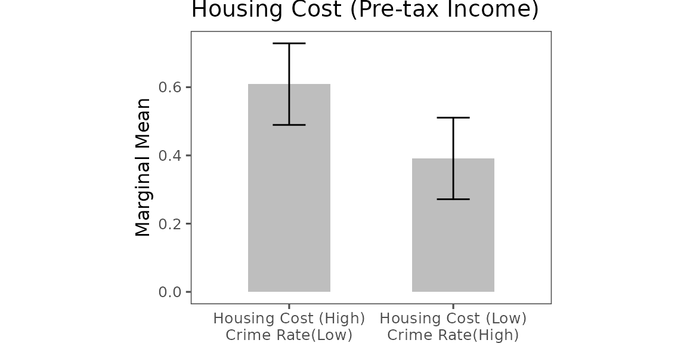
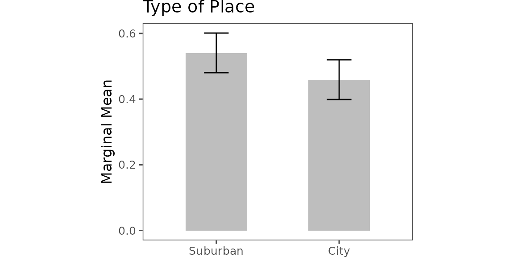
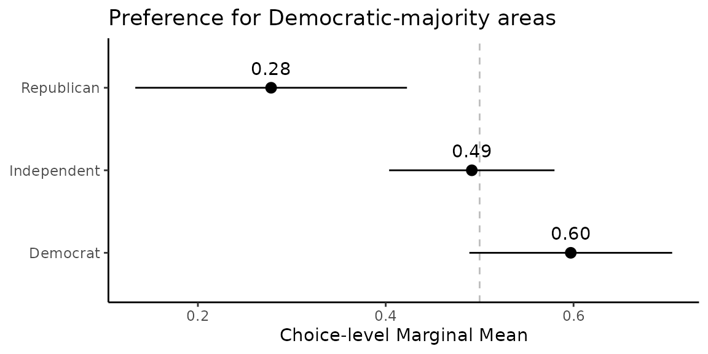

Explore and Compare Further
explore.Rmd🌟 Explore and Compare Further
Choice-level analysis opens the door to many new research questions that traditional profile-level analysis often overlooks. Below, we demonstrate how to estimate deeper quantities and compare subgroups effectively.
Depending on your objectives, you may want to reorganize the data in
a projoint_data object. The helper function below is
internal to the package, but you can call it explicitly in your
script.”
projoint_data <- function(labels, data) {
structure(
list(labels = labels, data = data),
class = "projoint_data"
)
}📦 Setup
We use the already wrangled and cleaned data
out1_arranged.
out1_arranged$labels## # A tibble: 24 × 4
## attribute level attribute_id level_id
## <chr> <chr> <chr> <chr>
## 1 Housing Cost (Pre-tax Income) 15% att1 att1:leve…
## 2 Housing Cost (Pre-tax Income) 30% att1 att1:leve…
## 3 Housing Cost (Pre-tax Income) 40% att1 att1:leve…
## 4 Presidential Vote (2020) 50% Dem, 50% Rep att2 att2:leve…
## 5 Presidential Vote (2020) 30% Dem, 70% Rep att2 att2:leve…
## 6 Presidential Vote (2020) 70% Dem, 30% Rep att2 att2:leve…
## 7 Racial Composition 50% White, 50% Nonwhite att3 att3:leve…
## 8 Racial Composition 75% White, 25% Nonwhite att3 att3:leve…
## 9 Racial Composition 90% White, 10% Nonwhite att3 att3:leve…
## 10 Racial Composition 96% White, 4% Nonwhite att3 att3:leve…
## # ℹ 14 more rows⚖️ Explore: Compare Trade-offs Directly
Example: Low Housing Costs vs. Low Crime Rates
Goal. Compare choices between two joint profiles:
- Low housing cost but high violent‑crime rate, versus
- High housing cost but low violent‑crime rate.
# 1) Data: keep only the two joint profiles of interest
d1 <- out1_arranged$data
d2 <- d1 |>
mutate(y1 = case_when(
# Low housing cost, high crime
att1 == "att1:level1" & att6 == "att6:level2" ~ 1,
TRUE ~ 0
),
y0 = case_when(
# High housing cost, low crime
att1 == "att1:level3" & att6 == "att6:level1" ~ 1,
TRUE ~ 0
)) |>
filter(y1 == 1 | y0 == 1)
# 2) Labels: rename only the two att1 levels to reflect the joint trade-offs
labels1 <- out1_arranged$labels
labels2 <- labels1 |>
mutate(level = case_when(level_id == "att1:level1" ~ "Housing Cost (Low)\nCrime Rate(High)",
level_id == "att1:level3" ~ "Housing Cost (High)\nCrime Rate(Low)",
TRUE ~ level_id))(Optional) Sanity checks
d1 |> count(att1, att6)## # A tibble: 6 × 3
## att1 att6 n
## <chr> <chr> <int>
## 1 att1:level1 att6:level1 1045
## 2 att1:level1 att6:level2 1069
## 3 att1:level2 att6:level1 1121
## 4 att1:level2 att6:level2 1034
## 5 att1:level3 att6:level1 1059
## 6 att1:level3 att6:level2 1072
d2 |> count(att1, att6) # only the two joint profiles remain## # A tibble: 2 × 3
## att1 att6 n
## <chr> <chr> <int>
## 1 att1:level1 att6:level2 1069
## 2 att1:level3 att6:level1 1059
labels1 |> filter(attribute_id == "att1")## # A tibble: 3 × 4
## attribute level attribute_id level_id
## <chr> <chr> <chr> <chr>
## 1 Housing Cost (Pre-tax Income) 15% att1 att1:level1
## 2 Housing Cost (Pre-tax Income) 30% att1 att1:level2
## 3 Housing Cost (Pre-tax Income) 40% att1 att1:level3## # A tibble: 2 × 4
## attribute level attribute_id level_id
## <chr> <chr> <chr> <chr>
## 1 Housing Cost (Pre-tax Income) "Housing Cost (Low)\nCrim… att1 att1:le…
## 2 Housing Cost (Pre-tax Income) "Housing Cost (High)\nCri… att1 att1:le…Recreate a projoint_data object, set the QOI,
and plot.
# 3) Build a new projoint_data object
pj_data_wrangled <- projoint_data("labels" = labels2,
"data" = d2)
# 4) Quantity of interest: Low vs High housing cost under the specified crime conditions (choice-level MM)
qoi <- set_qoi(
.att_choose = "att1",
.lev_choose = "level1", # Low housing cost (with high crime in this subset)
.att_notchoose = "att1",
.lev_notchoose = "level3" # High housing cost (with low crime in this subset)
)
# 5) Estimate and plot (horizontal layout)
out <- projoint(pj_data_wrangled, qoi)
plot(out)
🧩 Explore: Compare Multiple Levels Simultaneously
Example: Urban vs. Suburban Preferences
Goal. Collapse att7 into two
buckets—City (levels 1–2) vs. Suburban (levels 5–6)—then re‑estimate and
plot.
# 1) Data: collapse levels for att7
d1 <- out1_arranged$data
d2 <- d1 |>
mutate(
att7 = case_when(
att7 %in% c("att7:level1", "att7:level2") ~ "att7:level7", # City
att7 %in% c("att7:level5", "att7:level6") ~ "att7:level8", # Suburban
TRUE ~ att7
)
)
# 2) Labels: create matching level IDs and readable names
labels1 <- out1_arranged$labels
labels2 <- labels1 |>
mutate(
level_id = case_when(
level_id %in% c("att7:level1", "att7:level2") ~ "att7:level7",
level_id %in% c("att7:level5", "att7:level6") ~ "att7:level8",
TRUE ~ level_id
),
level = case_when(
level_id == "att7:level7" ~ "City",
level_id == "att7:level8" ~ "Suburban",
TRUE ~ level
)
) |>
distinct()(Optional) Sanity checks
d1 |> count(att7)## # A tibble: 6 × 2
## att7 n
## <chr> <int>
## 1 att7:level1 1032
## 2 att7:level2 1047
## 3 att7:level3 1117
## 4 att7:level4 1092
## 5 att7:level5 1045
## 6 att7:level6 1067
d2 |> count(att7)## # A tibble: 4 × 2
## att7 n
## <chr> <int>
## 1 att7:level3 1117
## 2 att7:level4 1092
## 3 att7:level7 2079
## 4 att7:level8 2112
labels1 |> filter(attribute_id == "att7")## # A tibble: 6 × 4
## attribute level attribute_id level_id
## <chr> <chr> <chr> <chr>
## 1 Type of Place City, more residential area att7 att7:level1
## 2 Type of Place City, downtown area att7 att7:level2
## 3 Type of Place Rural area att7 att7:level3
## 4 Type of Place Small town att7 att7:level4
## 5 Type of Place Suburban, only houses att7 att7:level5
## 6 Type of Place Suburban, downtown area att7 att7:level6
labels2 |> filter(attribute_id == "att7")## # A tibble: 4 × 4
## attribute level attribute_id level_id
## <chr> <chr> <chr> <chr>
## 1 Type of Place City att7 att7:level7
## 2 Type of Place Rural area att7 att7:level3
## 3 Type of Place Small town att7 att7:level4
## 4 Type of Place Suburban att7 att7:level8Recreate a projoint_data object, set the QOI,
and plot.
# 3) Build a new projoint_data object
pj_data_wrangled <- projoint_data("labels" = labels2,
"data" = d2)
# 4) Quantity of interest: City vs. Suburban (choice-level MM)
qoi <- set_qoi(
.structure = "choice_level",
.att_choose = "att7",
.lev_choose = "level7", # City
.att_notchoose = "att7",
.lev_notchoose = "level8" # Suburban
)
# 5) Estimate and plot (horizontal layout)
out <- projoint(pj_data_wrangled, qoi)
plot(out)
📊 Compare: Subgroup Differences
Choice-Level Subgroup Comparison: Party Differences
outcomes <- c(paste0("choice", 1:8), "choice1_repeated_flipped")
df_D <- exampleData1 |> filter(party_1 == "Democrat") |> reshape_projoint(outcomes)
df_R <- exampleData1 |> filter(party_1 == "Republican") |> reshape_projoint(outcomes)
df_0 <- exampleData1 |> filter(party_1 %in% c("Something else", "Independent")) |> reshape_projoint(outcomes)
qoi <- set_qoi(
.structure = "choice_level",
.estimand = "mm",
.att_choose = "att2",
.lev_choose = "level3",
.att_notchoose = "att2",
.lev_notchoose = "level1"
)
out_D <- projoint(df_D, qoi)
out_R <- projoint(df_R, qoi)
out_0 <- projoint(df_0, qoi)
out_merged <- bind_rows(
out_D$estimates |> mutate(party = "Democrat"),
out_R$estimates |> mutate(party = "Republican"),
out_0$estimates |> mutate(party = "Independent")
) |> filter(estimand == "mm_corrected")
# Plot
ggplot(out_merged, aes(y = party, x = estimate)) +
geom_vline(xintercept = 0.5, linetype = "dashed", color = "gray") +
geom_pointrange(aes(xmin = conf.low, xmax = conf.high)) +
geom_text(aes(label = format(round(estimate, 2), nsmall = 2)), vjust = -1) +
labs(y = NULL, x = "Choice-level Marginal Mean",
title = "Preference for Democratic-majority areas") +
theme_classic()
🏠 Home: Home